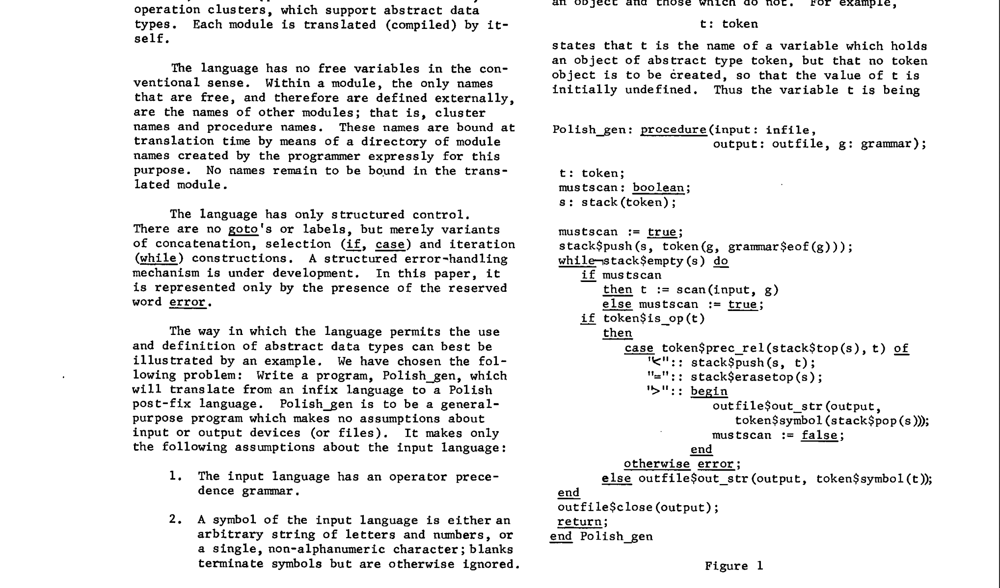
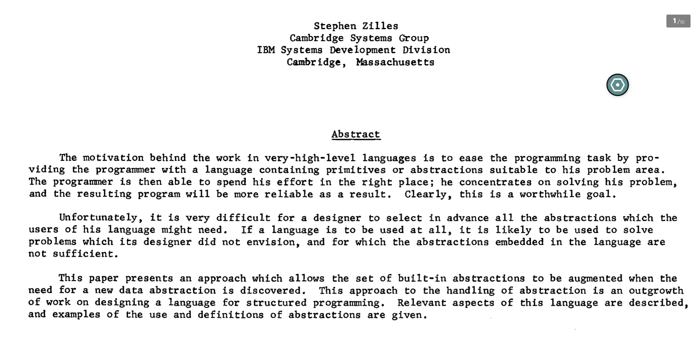
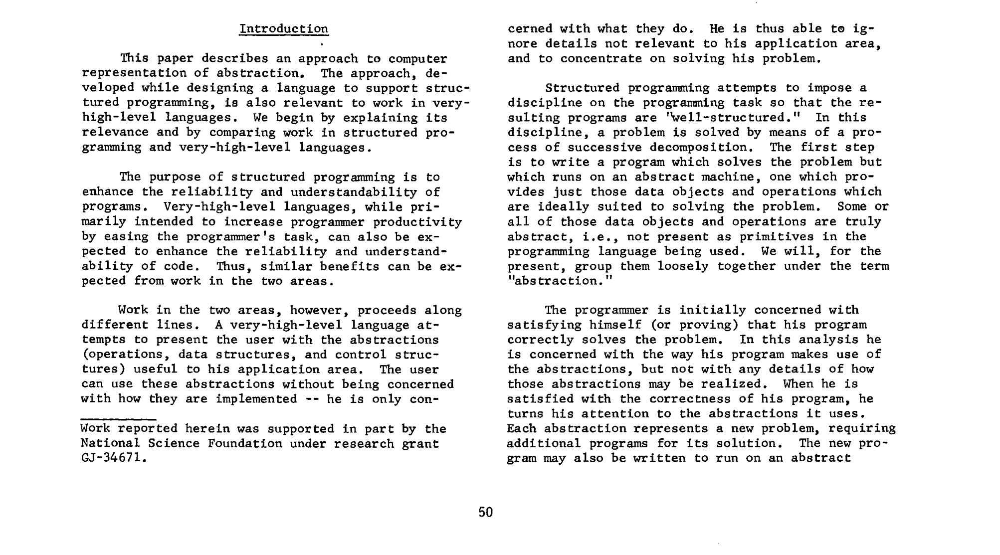
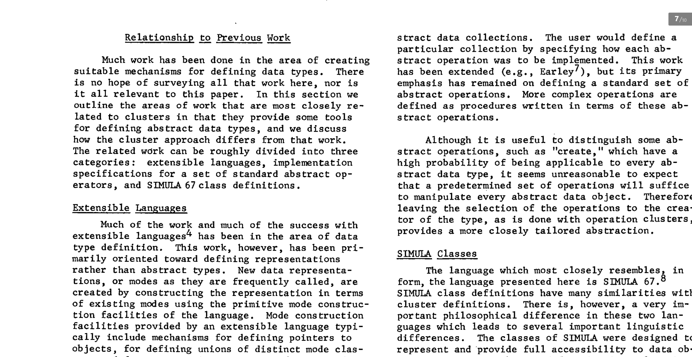
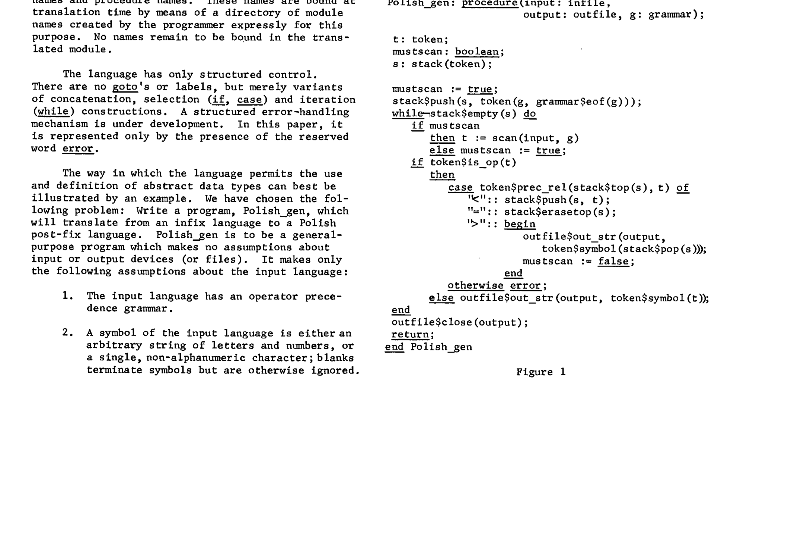
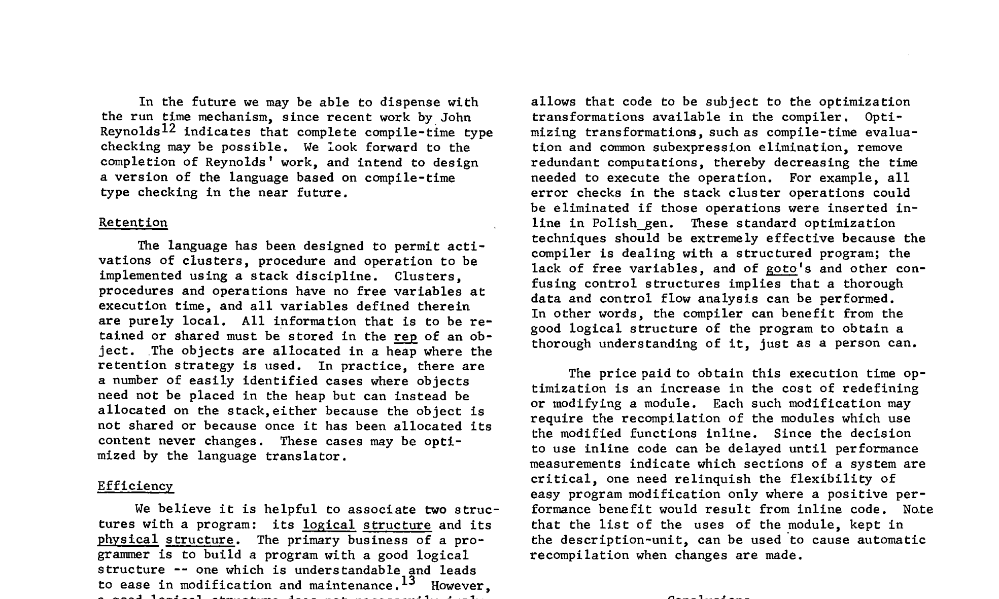
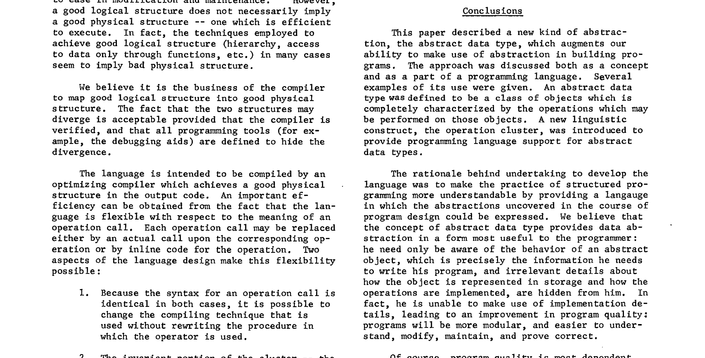

Software engineering
- Wie lese ich ein wissenschaftliches Paper-
Marcel Lüthi
Wissenschaftliche Paper

- Resultat von langer Forschung und Denkarbeit
- Machmal schwierig komplett zu verstehen
Aufbau eines Papers
Wissenschaftliche Artikel sind (fast) immer gleich aufgebaut
- Abstract
- Introduction
- Method
- Experiments / Results
- Conclusion
Abstract

- Kurzzusammenfassung des Inhalts
- Sollte guten Überblick geben
- Entscheidungsgrundlage ob man weiterlesen will
Introduction

- Führt ins Thema ein
- Motiviert/Analysiert Probleme die das Paper anspricht
- Skizziert den Ansatz
Related work

- Manchmal Teil der Introduction
- Setzt das Paper in Kontext zu anderen Arbeiten
Method

- Stellt Lösungsansatz vor
- Meist technisch und formal
- Schwierigster Teil des Paper
Experiments / Results

- Beschreibt Experimente / Implementation
- Präsentiert Resultate
- "Evidenz", dass Methode (besser) funktioniert
Conclusion / Discussion

- Zusammenfassung des Inhalts (retrospektiv)
- Was wurde erreicht
- Wo liegen Probleme
- Wie sollte man weitergehen
Wie lese ich ein Paper
Das Paper sollte 3 mal gelesen werden.
- Übersicht verschaffen (5-10 min)
- Genaues Lesen (30 min - 1h)
- Details verstehen (mehrere Stunden?)
Keshav, S. "How to read a paper." ACM SIGCOMM Computer Communication Review 37.3 (2007): 83-84.
Wie lese ich ein Paper
Das Paper sollte 3 mal gelesen werden.
- Übersicht verschaffen (5-10 min)
- Genaues Lesen (ca 1h)
- Details verstehen (mehrere Stunden?)
- In diesem Kurs nicht notwendig
Keshav, S. "How to read a paper." ACM SIGCOMM Computer Communication Review 37.3 (2007): 83-84.
Übersicht verschaffen
- Titel, Abstract und Introduction genau lesen
- Abschnittstitel lesen
- Alles andere noch ignorieren
- Conclusion lesen
Ziel: Verstehen wovon das Paper handelt (Contribution)
Genaues Lesen
- Paper genau lesen.
- Illustrationen und Plots genau anschauen
- Details wie Beweise und Algorithmen noch ignorieren
Ziel: Inhalt des Papers verstehen
Details verstehen
- In details vertiefen
- Algorithmen, Beweise, ...
- Annahmen hinterfragen
- Wie würde man die Idee selbst pra¨sentieren?
Ziel: Paper/Ansatz komplett verstehen.
Erstes Paper
Brooks, F., and H. J. Kugler.
No silver bullet. April, 1987.
- Abgabe der Übungen (Theoriefragen) bis naechste Woche
- Details sind auf der Kurswebpage